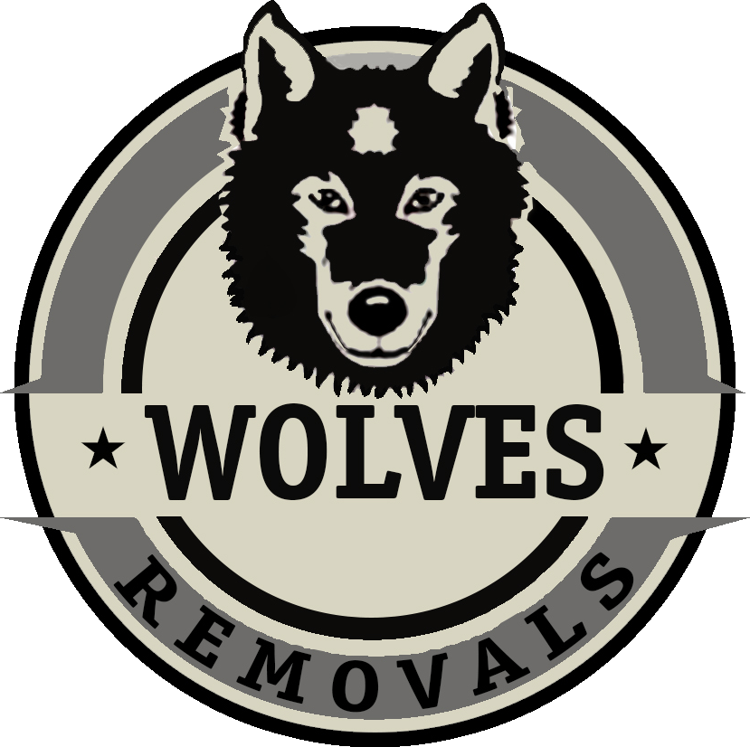
Thank you for viewing this PDF. Now that you’re moving home, we want the whole experience to feel calm, organised and genuinely enjoyable — never stressful. This guide is our way of supporting you every step of the way: a friendly, week-by-week checklist drawn from years of carefully moving families and businesses across Sussex. Wherever you are in your journey, our team is only ever a phone call away — and we’d be delighted to take the heavy lifting, and the worry, off your hands.
Eight weeks out, your move is still more idea than upheaval — and that makes this the perfect moment to lock in the big decisions while there’s no pressure on the clock. Book your removals quote in early, because the most popular dates around completion tend to go first, then decide how hands-on you’d like to be: pack yourself with our boxes, or let our team take care of every cupboard and drawer for you. It’s also the ideal time to begin a gentle, room-by-room declutter — every item you donate, sell or recycle now is one less thing to wrap, carry and find a home for at the other end. Work through the checklist below at your own pace, ticking each box as you go, and you’ll head into the weeks ahead feeling calm and organised rather than rushed.
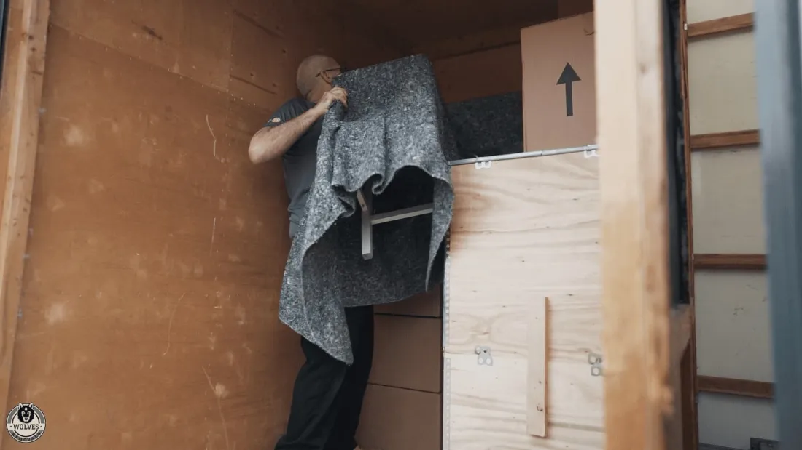
With the big decisions behind you, this week is all about the practical side — the people, the journey and the materials that quietly make moving day run like clockwork. Think about everyone under your roof first: talk children through what’s happening so the move feels like an adventure rather than a worry, and line up childcare or a pet-sitter so the day itself stays calm. Take a proper look at access and parking at both addresses too — narrow lanes, lifts, time limits and permit zones are all far easier to sort now than on the morning itself, and a quick word with us means we’ll arrange anything that’s needed. Finally, gather your packing materials in good time: a mix of box sizes, wardrobe boxes for hanging clothes, plenty of bubble wrap and strong tape, and a marker pen for clear, colour-coded room labels.
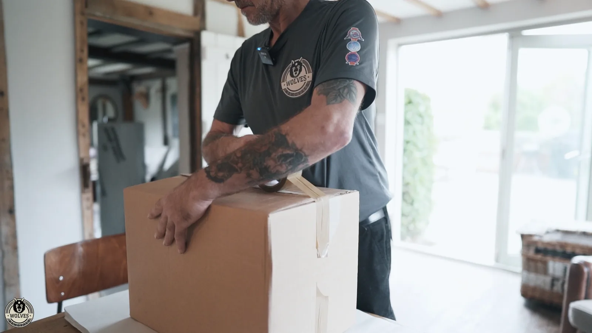
Six weeks out, it’s time to start letting the right people know you’re on the move — and doing it steadily now saves a frantic scramble later. Work through the essentials first: your energy suppliers, water authority and council tax, then your bank, pension and insurers, your employer and HMRC, and your broadband, phone and TV providers. Use the table below to record exactly who you’ve contacted, the date you did it and any reference numbers they give you, so nothing falls through the cracks and you’ve a clear paper trail if you ever need it. This is also a natural moment to make a real start on packing the parts of the house you rarely touch — the loft, the garage and the spare room — and to jot down the easily-forgotten names like schools, the DVLA, subscriptions and regular deliveries.
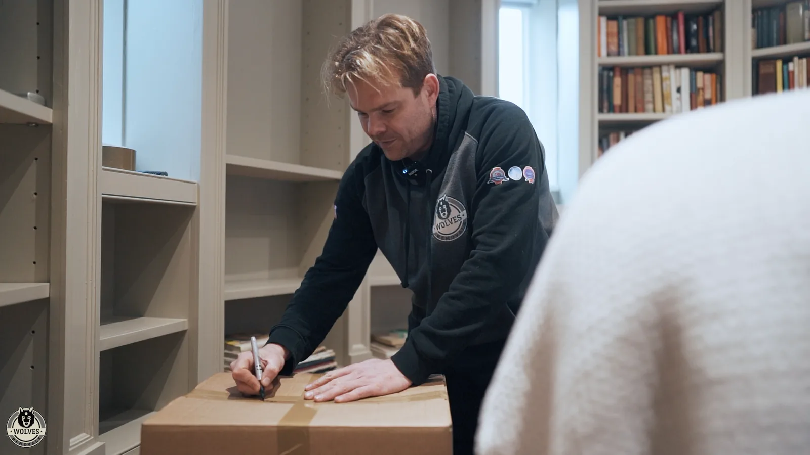
| 1 — Tell the important people | Done | Provider | Date completed | Notes |
|---|---|---|---|---|
| Energy suppliers, water authority & council tax | ||||
| Bank, building society, pension & insurers | ||||
| Employer & HMRC | ||||
| Broadband, phone & TV providers, TV Licence |
Five weeks to go, and the focus turns to your address — making sure everyone who needs your new one actually has it. Run through the list methodically: your driving licence and vehicle records, your GP, dentist, optician and pharmacy, your online shops and regular deliveries, and any subscriptions or memberships that follow you to your door. Record each one in the table as you go, so a single glance tells you what’s done and what’s still outstanding, and nothing important slips quietly through the net. With the admin in hand, start picturing life in the new place — decide roughly where the larger furniture will live, measure any doorways that look tight, and re-confirm your completion dates with your solicitor and agent. A little forward planning now means the crew can carry each piece straight to the right room on the day.
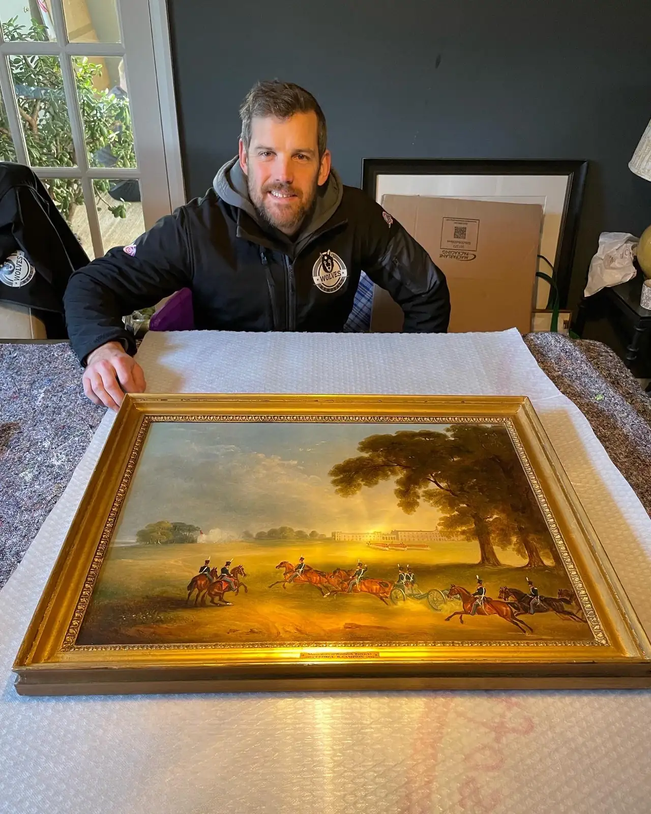
| 1 — Change of address | Done | Provider | Date completed | Notes |
|---|---|---|---|---|
| Driving licence & vehicle records | ||||
| GP, dentist, optician & pharmacy | ||||
| Online shopping & deliveries | ||||
| Subscriptions & memberships |
A month to go, and this is the week to gather the paperwork you’ll want to keep close rather than packed away in a box somewhere. Passports, birth certificates and medical records, your financial and insurance documents, warranties, manuals and any valuations — collect them together and keep them with you, ideally in the “open first” box that travels in your own car. It’s also worth giving a little thought to storage, even if you’re sure you won’t need it: completion dates have a habit of not quite lining up, and our clean, dry, alarmed containerised storage bridges any gap with no long tie-ins, for a few days or a few months. Because we can pack, transport and store everything under one roof, there’s no juggling separate companies — just one friendly team looking after the lot.
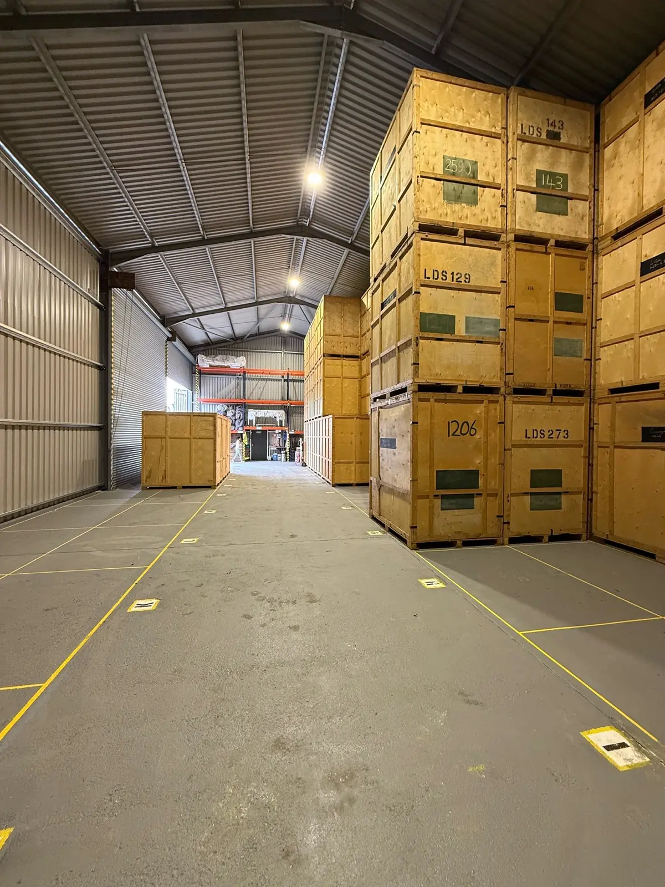
The finish line is in sight, and with three weeks left packing steps up a gear — but worked at steadily, it never needs to feel overwhelming. Wrap fragile items individually and pad out every gap so nothing can shift in transit, keep heavy things in small boxes and lighter things in large ones, and label each box clearly with its room and a “this way up” where it matters. Set aside an essentials box to pack last and open first, and keep anything genuinely irreplaceable — jewellery, documents, that one sentimental piece — to carry yourself. Now’s also the moment for the jobs people forget: start running down the freezer, and safely dispose of anything that can’t travel such as paint, fuel and aerosols, checking with us if you’re ever unsure. Tick each section off below and the house will empty out around you in a calm, orderly way.
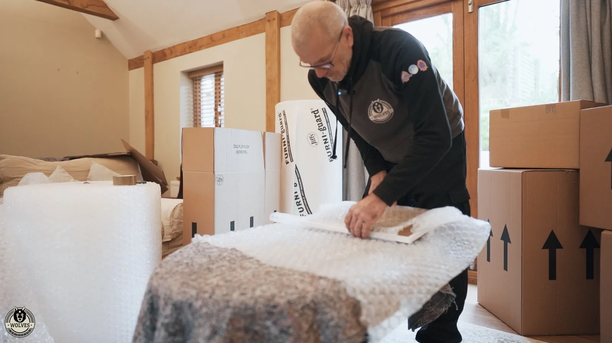
Almost there — with two weeks to go it’s time to tie up the loose ends so the final stretch feels effortless. Touch base with the people and services that keep your household running: confirm closing readings and accounts with your utilities, arrange for any appliances that need disconnecting or plumbing in, and make sure the right people have your moving date. Re-confirm the plan with us too — the timings, the access, who’s paying the balance and when — so there are no last-minute surprises on either side. This is also a good week to sort anything that needs a little notice, from booking a parking suspension to arranging childcare or a pet-sitter for the day itself. Work through the checklist below and you’ll reach the final week with the big pieces already in place and very little left to worry about.
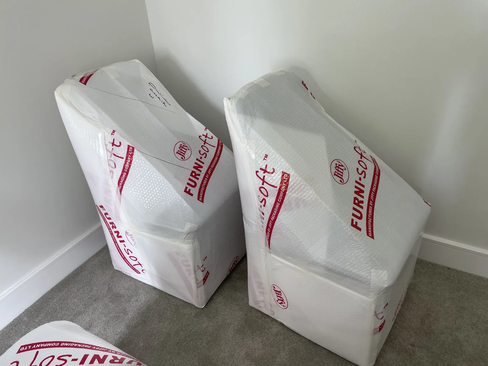
| 1 — Utilities & appliances | Done | Provider | Date completed | Notes |
|---|---|---|---|---|
| Arrange to disconnect cooker, gas fire & washer | ||||
| Book any plumbing or electrical disconnections | ||||
| Confirm final meter readings with suppliers | ||||
| Set up services at the new home | ||||
| Cancel window cleaner, gardener & milk delivery | ||||
| Plan to defrost the fridge-freezer |
This is the final stretch, and a handful of well-chosen jobs this week is all that stands between you and a calm moving morning. Empty, defrost and dry the fridge-freezer in good time, give each room a quick clean as it empties, and finish the packing bar the one essentials box you’ll live out of. Pack an overnight bag for everyone — clothes, toiletries, medication, chargers and a few snacks — and build your “open first” box with the kettle, mugs, tea and coffee, toilet roll, a torch, a basic cleaning kit and anything else you’ll want within arm’s reach at the other end. Re-confirm key collection times with your agent, charge your phone and save our number, and settle the balance as agreed. Then do the most important job of all: get an early night, because tomorrow’s the day and we’ll take it from here.
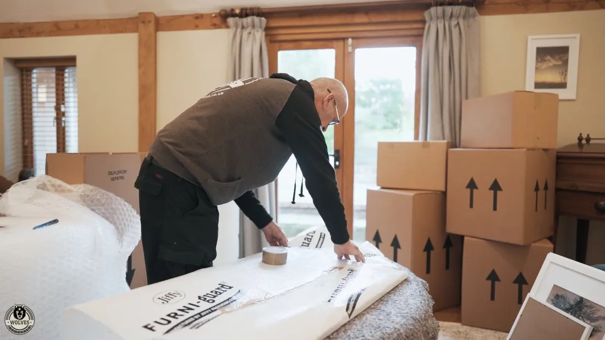
This is the day all that careful planning quietly pays off — and from here, the heavy lifting is genuinely ours. Your foreman will walk the property with you first thing to confirm the plan, then the crew gets to work while your job becomes the pleasant one: overseeing, answering the odd question and keeping the tea flowing. Before you leave the old home, take your final meter readings, do one last check of every room, the loft and the garden, switch off the appliances and lock up, leaving the keys exactly as agreed with your agent. At the new place, collect the keys, show the crew where each room is so everything lands in the right spot, take fresh meter readings, and have a quick look over the van to be sure nothing’s been left behind. Then put the kettle on — you’ve well and truly earned it.
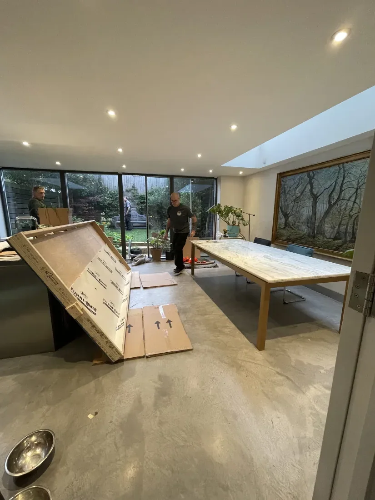
You’re in — and a little order, in the right order, is what turns a houseful of boxes into a home. Start with the practical bits that bring real peace of mind: find the stopcock and fuse box, test the smoke and carbon-monoxide alarms, get the broadband and utilities switched over, and bleed the radiators so the heating’s ready for the evening. Then unpack like a pro by making the essentials liveable first — the beds, the kitchen and the bathroom — before working room by room, checking each box is truly empty before you flatten it for us to collect. There’s no prize for finishing in a day, so take your time and enjoy the space. When you’re ready, tidy up the last of the admin: update your driving licence and log book, tell your car insurer, move your memberships and the electoral roll across, and set up mail redirection if you haven’t already.
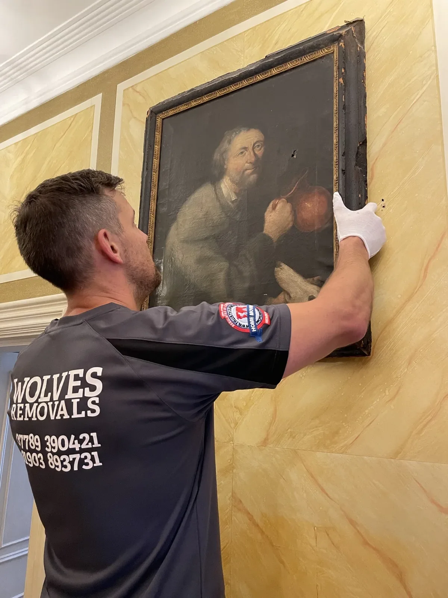
In an emergency always dial 999. Keep the rest of these numbers to hand throughout your move — fill in your own where blank.
| Contact | Name | Phone number | Notes |
|---|---|---|---|
| Emergency Services | 999 | ||
| NHS non-emergency | 111 | ||
| Police non-emergency | 101 | ||
| Gas emergency (National Gas) | 0800 111 999 | ||
| Power cut line | 105 | ||
| Floodline | 0345 988 1188 | ||
| Wolves Removals | 01903 893731 | ||
| Solicitor / conveyancer | |||
| Estate agent | |||
| Buildings & contents insurer |
Your new local contacts — fill these in as you register and settle into your new area.
| Contact | Name | Phone number | Notes |
|---|---|---|---|
| Electricity supplier | |||
| Gas supplier | |||
| Water supplier | |||
| Local council | |||
| Broadband / phone | |||
| Doctor / GP | |||
| Dentist | |||
| Optician | |||
| Vet | |||
| School / nursery | |||
| Bank / building society | |||
| Other |
Whenever you’re ready to move, we’re ready to help.
From the very first survey to the very last box, we look after every detail with genuine care — the kind a family-run team brings because its name is on every van. Local, national or European; home or business; a single antique or an entire house — talk to us for a free, no-obligation quote and a clear, fixed written price.
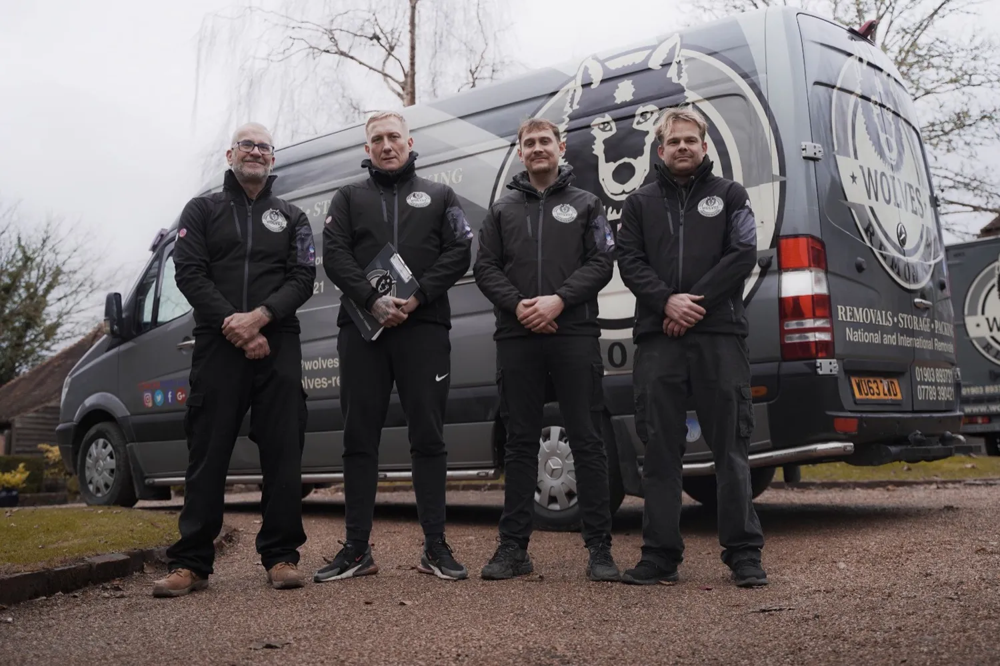
Wolves Removals
Doryln House, London Road
Ashington, Pulborough
West Sussex, RH20 3JT
Office: 01903 893731
Mobile: 07789 390421
Email: contact@wolves-removals.co.uk
LAPADA member · Checkatrade verified · fully covered
or get your free, no-obligation quote at wolves-removals.co.uk